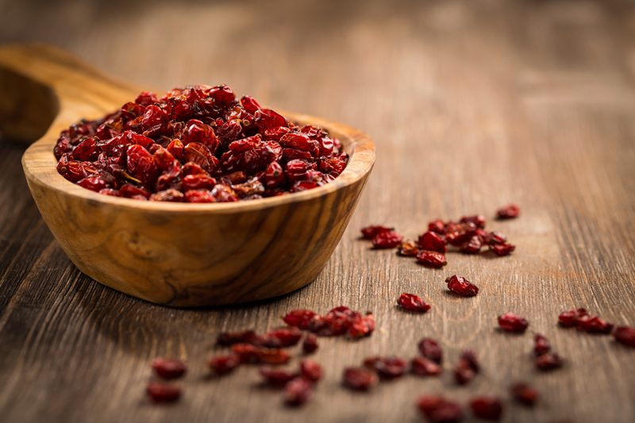
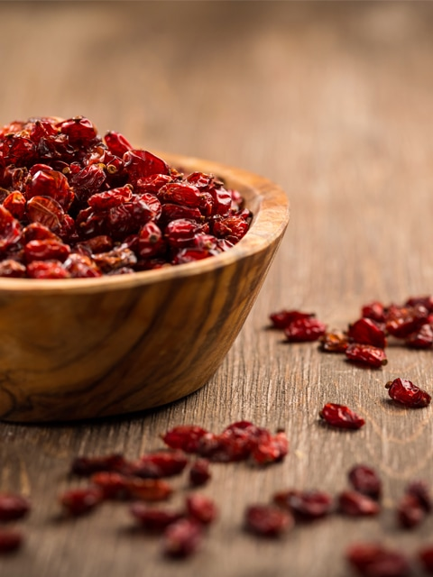

Dried & Fresh Fruits
I need to start every post that I do on sweeteners with the following thought… Just because the dessert recipes on my site (or any other raw site) are raw, created on the foundation of whole foods, and are healthier than the typical SAD (Standard American Diet) desserts… they are still desserts and should be consumed sensibly.

I am not here to debate which sweetener is better than some other or whether or not you should consume them at all. You know your own health better than anyone else, so you will need to make those decisions for yourself.
To Use or Not to Use…
Sweeteners, in general, tend to face controversy at some point or another. My suggestion is to use sweeteners in their raw and purest form so be sure to read the labels and if you are really concerned, called the manufacturer. Some raw sweeteners are vegan, and some are not, you decide on what the priority is for you. All we can ask of ourselves is to make the best possible decisions with the information we have at the time.
Why do you use several sweeteners in one recipe?

I like to mix different sweeteners together for several reasons. By using multiple sweeteners, I can sometimes reduce the overall glycemic load, as well as create layers of flavor and sweetness. Plus, different sweeteners respond textually in unique ways.
For example, dried fruits not only add sweetness to a recipe but also works as a binder, holding cakes, cookies, and bars together. To keep the sugar levels down, I might add stevia, which bumps up the sweet level without adding more sugars or calories.
In raw recipes, you always need to take your health needs in an account, as well as the texture that you want from a recipe and the overall flavor.
Nutritional Data:
You can use fresh, pureed, or dried fruit… as well as fruit juice and frozen fruit as a replacement for sweeteners in MOST recipes. It might require some overall adjusting of the recipe, but it can be done. When using fruit, it is important to remember that it will impart particular flavors (of the fruit you are using) compared to other sweeteners.
Using fresh fruit:
The key to using fresh fruit is in selecting fresh fruit that is at its peak of ripeness! Unripe fruit won’t be as sweet, and you may have to cut it with other sweeteners. Not to mention, unripe fruit is more taxing on your system to digest. When you need to replace 1 cup of sugar in a recipe, start with 1 cup of RIPE fruit puree and go from there. It will always depend on the recipe, texture, and your taste buds!
Kitchen Raw Food Staple: (dried fruit)
To help speed things up in the kitchen, I would recommend making up a few dried fruit purees to have on hand for when the “inspiration-bug” bites you. A quick and easy way to go about this is to fill a jar about 3/4 of the way full with a dried fruit of your choice. Add enough water to cover the fruit, place the lid on and pop it in the fridge overnight.
After the dried fruit is fully re-hydrated, drain the soak water in a glass (you might need this). Place the fruit in a food processor, fitted with the “S” blade, and process until it turns into a paste. Add 1 Tbsp of the soak water as needed to keep the paste moving freely in the processor. Store in the fridge for several months, using it as needed for recipes, ice cream toppings, as a spread on bread or crackers… endless ideas really! When a recipe calls for 1 cup of sugar… start with 1/2 cup of dried fruit puree and build the sweet level from there.
Do I need to use other sweeteners with it?
As I mentioned above… I like to use multiple sweeteners in recipes to create layers of flavor, texture, and sweetness. It really depends on the recipe and how sweet you do or don’t like things. You are the one yielding the spatula. But there are enhancers that can be used to help bump up the sweetness such as; orange or lemon zest, which brings out the fruitiness in a dish and heightens the flavors of the ingredients used.
Try adding sweet-enhancing spices such as cinnamon, cloves, allspice, ginger, and nutmeg intensify flavors in a recipe. Don’t be afraid to use a mixture of spices either. Try doubling the amount of vanilla called for in the recipe as it will accentuate the sweetness in the recipe as well. Keep in mind that certain veggies can be used to help sweeten a recipe as well, such as carrots, sweet potato, pumpkin, cassava, or yams.
I hope you found this helpful. Blessings, amie sue
© AmieSue.com